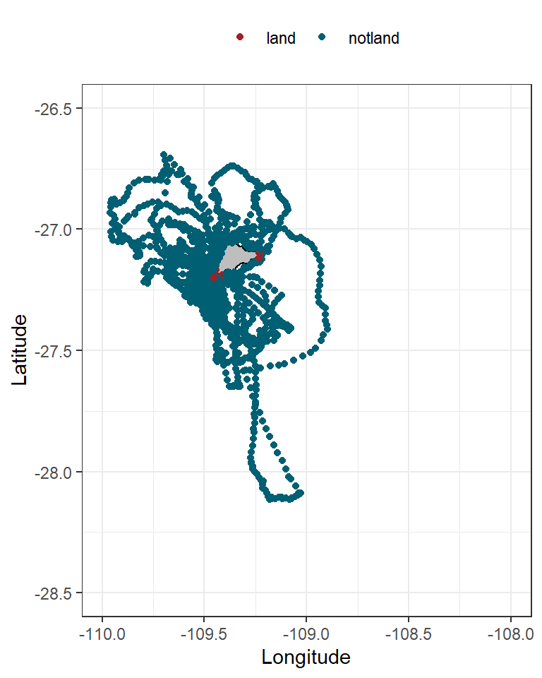
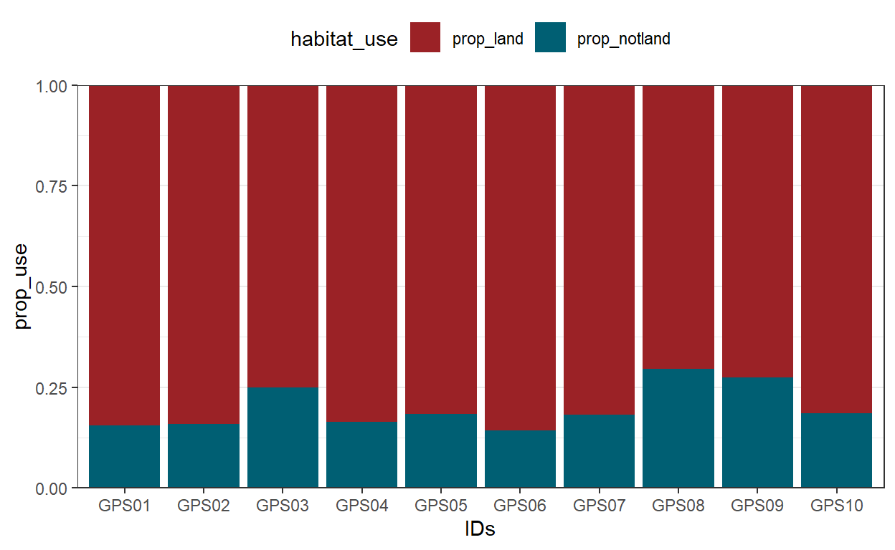

How to assign habitat use to animal locations.
This post is about how to classify locations on your tracking data based on an polygon with geographical information.
This is useful for example when you want to know:
- If the animal is using a specific habitats, and
- To calculate the percentage of use of a specific habitat
See examples on the recommended literature at the bottom of this
post.
In this post we will classify tracking locations as land vs not land.
To do this exercise, load data from the package ‘sula’.
For
accessing the data, you need to have the package installed.
To install:
#devtools::install_github("MiriamLL/sula")
library(sula)
The data is from 10 tracked individuals.
my_locs<-(GPS_raw)
Check how many locations I have per individual
# A tibble: 10 x 2
IDs n
<chr> <int>
1 GPS01 1038
2 GPS02 1049
3 GPS03 1246
4 GPS04 1031
5 GPS05 962
6 GPS06 1231
7 GPS07 1004
8 GPS08 1015
9 GPS09 931
10 GPS10 933To transform your GPS locations to spatial data, use the functions
from the package sp.
It would turn your data frame into a
SpatialPointsDataFrame.
my_locs <- as.data.frame(my_locs)
my_points <-my_locs
sp::coordinates(my_points) <- ~Longitude + Latitude
sp::proj4string(my_points) = sp::CRS("+init=epsg:4326")
For the polygon, you can download shapefiles according to your interest and area of study.
Some sources of country polygons are:
- DIVA-GIS
But there are many shapefile sources per country,
- For Chile: several exammples are summarized
here
- For Mexico: IDEA Infraestructura de
Datos Espaciales Abiertos
- For Germany: BSH-GeoSeaPortal
… just to mention a few.
Because the tracking data from the example was collected in Chile, we will use the country shapefile of Chile downloaded from the DIVA-GIS portal.
The package rgdal has the function readOGR which allows us to load the polygon into R.
The polygon will be read as SpatialPolygonDataFrame.
The function over checks which of the points (my_locs) fall inside the polygon (my_polygon).
Be cautious, the points and the polygon should be at the same CRS.
polygon_proj <- proj4string(my_polygon)
proj4string(my_points) <- polygon_proj
The function over will return a data frame with the information where the points and the polygon intersect.
Landornot_over<- over(my_points, my_polygon)
It depends on the information of your polygon, but in this particular example, in the column NAME_0, if the points fall inside the polygon, it keeps ‘Chile’ otherwise returns an NA.
unique(Landornot_over$NAME_0)
[1] "Chile" NA We can add this information back to our locations to know which of the locations fall inside the territorial land limits or not.
my_locs$landornot <- Landornot_over$NAME_0
To make it easier to remember you can replace Chile and 0 for the data available in your polygon.
my_locs$landornot[is.na(my_locs$landornot)] <- 0
You can also export this data frame to check in a GIS program.
Now using functions from the package tidyverse you can quantify the numer of locations that the animal was at land or not.
… and also calculate the percentage of time using one habitat or the other.
Habitatuse$total<-Habitatuse$land+Habitatuse$notland
Habitatuse$prop_land<-Habitatuse$land*100/Habitatuse$total
Habitatuse$prop_notland<-Habitatuse$notland*100/Habitatuse$total
Habitatuse$prop<-Habitatuse$prop_land+Habitatuse$prop_notland
Plotting the data will help to confirm if the classification is correct.
ggplot()+
geom_polygon(data=my_polygon, aes(x=long, y=lat, group=group), color='black',fill='grey')+
geom_point(data=my_locs, aes(x=Longitude,y=Latitude,color=landornot))+
scale_color_manual(values=c('#9b2226','#005f73'))+
theme_bw()+
theme(legend.position = 'top')+
labs(x = "Longitude", y="Latitude",color='')+
xlim(-110, -108)+
ylim(-28.5, -26.5)

To customize your plot, you can change many arguments, for example to
change the theme_bw here are
other options.
Do not forget to adjust your xlim and ylim to your
coordinates.
You can also plot the percentage of habitat use per individual.
To do this, preparing the information in a long format will make it easier to plot.
Habitatuse_prop<-Habitatuse %>%
pivot_longer(c(prop_land,prop_notland),
names_to = "habitat_use",
values_to = "prop_use" )
ggplot(Habitatuse_prop, aes(fill=habitat_use, y=prop_use, x=IDs)) +
geom_bar(position="fill", stat="identity")+
scale_fill_manual(values=c('#9b2226','#005f73'))+
theme_bw()+
theme(legend.position = 'top')+
scale_y_continuous(expand = c(0,0))

Function over:
Geometry
overlays
Examples in the literature:
Quantify
habitats visited
Individual
specialization in an ecological winner
Tracking
positions inside the protected areas
If you can think on another sources of geographical data please do not hesitate to write me to include it on the list.
For more details or suggestions, or just to say hi you can also always write me an email